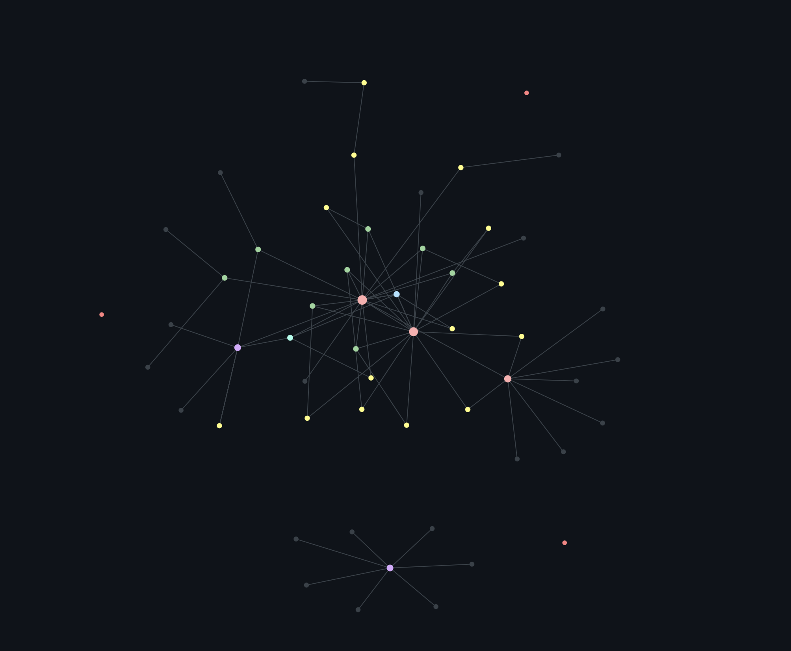

Notetaking with Org Roam
Table of Contents
Intro
Recently, I've been asked to do a guide on my notetaking workflow. So I've written a post about how I use Emacs with Org Roam and Org Roam UI to manage my notes, and, ultimately, my life.
Note: Backslashes are added to prevent automatic formatting. Yes, Org Mode can export to html.
Getting started
First off, you should install the necessary packages. I use use-package to manage mine, but you can just use M-x package-install if you want to.
(use-package org-roam :custom (org-roam-directory "~/Org/") :config (org-roam-setup)) (setq org-roam-v2-ack t) (use-package org-roam-ui :straight (:host github :repo "org-roam/org-roam-ui" :branch "main" :files ("*.el" "out")) :after org-roam :hook (after-init . org-roam-ui-mode) :config (setq org-roam-ui-sync-theme t org-roam-ui-follow t org-roam-ui-update-on-save t org-roam-ui-open-on-start t))
This chunk of code installs Org Roam and sets the notes directory to ~/Org/, though you can set it to whatever you want. It then installs Org Roam UI, which has a nice graph to visualize connections between notes. This is all you need to set up the basics.
Usage
To create a new file, run M-x org-roam-node-find, and enter the name you want. This command can also open existing Org Roam notes, though you probably don't have any right now. Once you open the new file, you can start taking notes! Org mode syntax is easy to understand, especially if you have used markdown before.
\* This is a heading
\** This is another smaller heading
\*** This is an even smaller heading
- Bullet points
- A
- 1
- 2
- 3
- B
- c
[\[https://example.com][A link]]
[\[A backlink]]
So an example file could be like the below:
:PROPERTIES: :ID: A-RANDOM-ID-GENERATED-BY-ROAM :END: \#+title: Notetaking with Org Roam \* Notetaking with Org Mode This is my first org file, where I'll test out org mode features!
Then, to link it to a file called org, you would add a backlink:
[...] This is my first [\[org]] file... [...]
An empty file with the title Org will be created. If the file exists, the link will simply link to the existing file.
After adding a link, you can open Org Roam UI with M-x orui-open, which will open the locally hosted graph in a browser. A graph with multiple notes and links would look like the one below:

These are the basics of Org Roam, and all you need to get started.